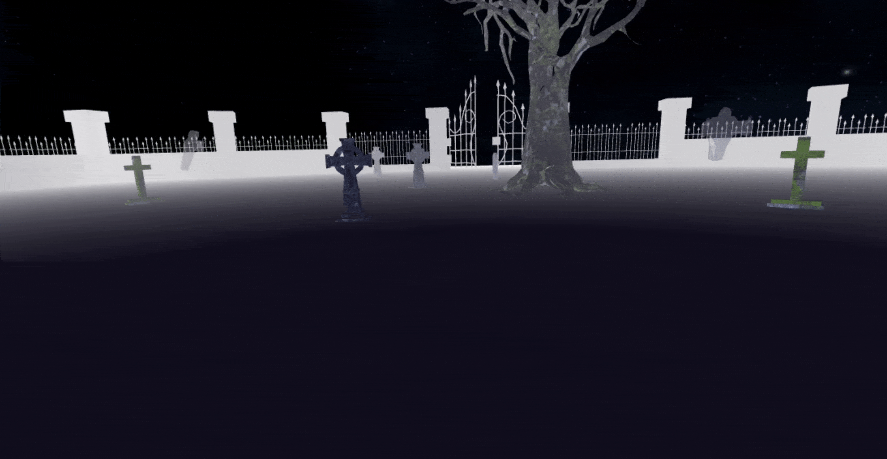
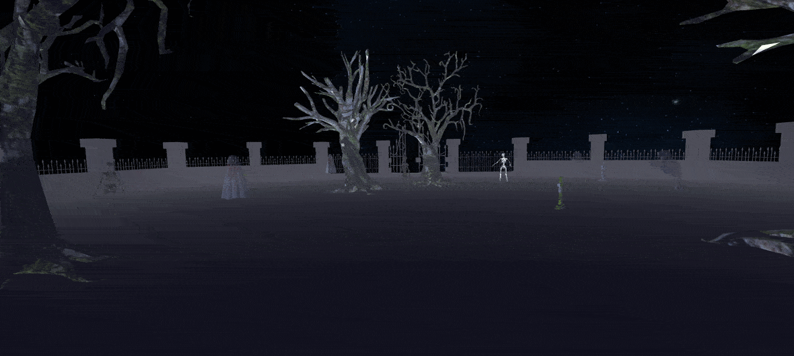

Introduzione
Questo è il progetto sviluppato per l'esame di "Computer Graphics A.A. 2023-2024".
L'obiettivo è quello di creare uno scenario "horror" (in questo caso un cimitero) in cui l'utente può modificare a proprio piacimento gli elementi del paesaggio.
Questi ultimi vengono posizionati proceduralmente nella scena 3D tramite un semplice algoritmo, in modo da offrire una vasta gamma di paesaggi sempre diversi.
I modelli .obj sono stati realizzati o modificati con Blender, mentre il loro caricamento e visualizzazione è stato realizzato con la libreria WebGL.
Struttura del Progetto
Il progetto è costituito dalle seguenti cartelle e file:
- doc: è la cartella che contiene la documentazione del progetto.
- project : è la cartella che contiene il codice del progetto ed è strutturata nel seguente modo:
- assets: contiene altre sotto-cartelle che ospitano i modelli/texture e le icone del progetto.
- icons: contiene le icone del sito (favicon).
- models: contiene tutti i modelli in formato .obj con le relative texture. Ognuno di essi ha la sua cartella separata.
- js: è la cartella principale in cui sono mantenuti tutti i file JavaScript del progetto. Contiene a sua volta altre cartelle.
- libs: contiene le librerie già disponibili (alcune modificate) per facilitare l'implementazione delle varie funzioni del progetto.
main.js è il file principale, contiene il codice di inizializzazione della grafica, l'applicazione delle impostazioni scelte, il ciclo di rendering, i vari effetti quali la nebbia.camera.js contiene la logica per l'implementazione della camera in prima persona.controls.js contiene la logica per l'implementazione dell'input utente e per il disegno del Canvas 2D contenente i comandi virtuali.model.js contiene come vengono gestiti i vari modelli e le loro proprietà. Contiene anche la logica per il posizionamento procedurale degli stessi.settings.js contiene la logica relativa all'applicazione delle impostazioni del posizionamento dei modelli nel paesaggio.skybox.js contiene la logica per l'implementazione dello skybox.utils.js contiene varie utility per il progetto, come funzioni di conversione o di adattamento del Canvas allo schermo.
Interfaccia Utente
Interfaccia Desktop:

L'interfaccia è suddivisa in varie sezioni che permettono di modificare diversi aspetti del paesaggio e dei parametri grafici:
Schermata Principale
La parte principale dell'interfaccia mostra il paesaggio (un cimitero) con modelli di alberi, scheletri, tombe e fantasmi.
Qui l'utente può osservare la scena renderizzata in tempo reale grazie a WebGL e muoversi interagendo coi bottoni/mouse.
Opzioni di Generazione del Paesaggio
Questa sezione permette di modificare il numero minimo e massimo degli elementi del paesaggio tramite slider/checkbox:
- Numero di Scheletri: Regola il numero minimo e massimo di scheletri visualizzati.
- Numero di Fantasmi: Regola il numero minimo e massimo di fantasmi visualizzati.
- Numero di Tombe: Regola il numero minimo e massimo di tombe visualizzate.
- Numero di Alberi: Regola il numero minimo e massimo di alberi visualizzati.
- Tombe con Nome: Permette di generare o meno delle tombe con dei nomi sopra (compresa quella dell'autore, come richiesta dalla traccia del progetto).
Impostazioni della Luce
Qui l'utente può regolare le due luci presenti nella scena, ovvero la Ambient Light e la Directional Light.
- Colore Ambient Light: Permette di selezionare il colore della Ambient Light.
- Colore Directional Light: Permette di selezionare il colore della Directional Light.
- Directional Light X, Y, Z: Serie di slider che regolano la direzione della Directional Light.
Impostazioni Grafiche
Qui è possibile modificare le opzioni grafiche avanzate.
- Trasparenza: Permette di attivare o disattivare la trasparenza (visibile nei fantasmi).
- Nebbia: Permette di attivare o disattivare l'effetto nebbia.
- Colore Nebbia: Permette di selezionare il colore della nebbia.
- Inizio Nebbia: Slider che regola il punto in cui la nebbia inizia ad essere visibile.
- Fine Nebbia: Slider che regola la distanza dove la nebbia andrà completamente a nascondere un oggetto in lontananza.
Controlli della Camera
Anche la camera ha delle sue opzioni regolabili.
FOV: Slider che regola il campo visivo della camera.
Controlli a Schermo
I pulsanti virtuali qui presenti sono stati realizzati usando un Canvas 2D e permettono di spostarsi all'interno del paesaggio.
Interfaccia Mobile:
Come richiesto dalla traccia del progetto, l'interfaccia è stata completamente adattata anche per dispositivi mobili.
L'utente può controllare la telecamera tramite il touchscreen del telefono, e può muoversi mediante il Canvas 2D che mostra i comandi virtuali.
Script
Qui vengono descritti gli script che compongono il progetto. Ecco un elenco di quelli principali:
main.js
Questo script è il cuore del progetto, va a gestire molte cose tra cui:
- L'inizializzazione di WebGL;
- Configurazione delle luci, skybox e modelli;
- Resa grafica della scena tramite il ciclo di rendering.
Funzioni principali:
main()
- Avvia il programma e inizializza WebGL.
- Configura gli shader e lo skybox.
- Carica e configura i modelli 3D basandosi sui valori letti dall'interfaccia utente.
- Inizializza la camera e i controlli.
- Inizia il ciclo di rendering.
initWebGL()
- Ottiene il contesto WebGL dal Canvas.
- Verifica il supporto per WebGL e abilita le funzionalità necessarie.
- Imposta il viewport per utilizzare l'intera area del Canvas.
updateFog() e updateLights()
- Aggiornano i parametri della nebbia e luci nella scena.
- Impostano il colore e la direzione delle luci ambientali e direzionali.
createCameraViewMatrix() e createProjectionMatrix()
- Creano e impostano la matrice di vista della camera.
- Calcolano e impostano la matrice di proiezione prospettica.
renderLoop()
- Gestisce il ciclo di rendering.
- Aggiorna le dimensioni del Canvas e pulisce i buffer.
- Aggiorna la nebbia e le luci nella scena.
- Renderizza lo skybox e i modelli 3D.
camera.js
Questo script permette di creare una telecamera in prima persona.
È progettato per gestire la visualizzazione di una scena 3D dal punto di vista della camera che può muoversi e ruotare come se fosse controllata da un utente in prima persona.
Classe Camera
- Costruttore: Inizializza la posizione della camera, la direzione verso cui guarda (forward) e le direzioni verso destra (right) e verso l'alto (up).
Funzioni di Rotazione della Camera
rotateUp(): Ruota la camera verso l'alto o verso il basso attorno all'asse destro (right).rotateLeft(): Ruota la camera verso sinistra o verso destra attorno all'asse verso l'alto (up).
Funzioni di Movimento
moveForward(): Muove la camera avanti o indietro lungo la direzione verso cui guarda (forward).moveRight(): Muove la camera orizzontalmente lungo la direzione destra (right).moveUp(): Muove la camera verso verticalmente lungo la direzione verso l'alto (up).
Funzioni Ausiliarie
reset(): Resetta l'orientamento della camera alla posizione iniziale, mantenendo la stessa posizione nello spazio.getViewMatrix(): Calcola e restituisce la matrice di vista della camera, necessaria per il rendering della scena 3D.getPosition(): Restituisce la posizione attuale della camera.
Funzione initCamera()
- Inizializza la camera con una posizione predefinita e la direzione verso cui guarda.
- Imposta la camera come nuova istanza della classe
Camera con i parametri di posizione, lookAt e up specificati.

model.js
Questo script è progettato per gestire la creazione, configurazione e rendering dei modelli 3D nella scena.
Classe Model
- Costruttore: Inizializza il modello con posizione, rotazione e scala predefinite. Carica la mesh dal file e configura i buffer necessari.
init()
- Carica la mesh dal file e riempie i buffer di posizione, normali e coordinate delle texture.
Funzioni per la Creazione e il Disegno del Modello
createModelTransformationMatrix()
- Crea la matrice di trasformazione per il modello, applicando traslazione, rotazione e scala.
createModelBuffers()
- Configura i buffer di posizione, normali e coordinate di texture per il modello.
drawModel()
- Imposta le uniform del materiale del modello.
- Gestisce la trasparenza se il modello è un fantasma.
- Configura e abilita i buffer di posizione, normali e coordinate di texture.
- Disegna il modello.
Funzioni per il Caricamento dei Modelli
checkCollision()
- Verifica se un nuovo modello si sovrappone ad uno dei modelli esistenti, evitando collisioni.
createModelCopies()
- Crea copie di un modello specifico, posizionandole in modo casuale nella scena.
- Controlla le collisioni e tenta di riposizionare il modello se necessario.
- È stato impostato un numero massimo di tentativi per il posizionamento casuale del modello, in modo da evitare loop infiniti.
createModels()
- Crea una lista di tutti i modelli necessari per la scena: terreno, paesaggio, alberi, tombe, scheletri e fantasmi.
- Ogni modello (eccetto il terreno e il paesaggio) ha due varianti distinte che vengono scelte casualmente.
- Vengono quindi distribuiti i modelli in modo casuale tra le varianti.
- Controlla le collisioni.
skybox.js
Questo script gestisce la creazione, configurazione e rendering dello skybox.
Classe Skybox
- Costruttore: Inizializza lo skybox con le texture fornite e configura i buffer necessari.
init()
- Inizializza i buffer delle posizioni e le texture dello skybox.
Funzioni per la Creazione e il Disegno dello Skybox
createSkyboxBuffers()
- Configura il buffer delle posizioni per lo skybox.
- Crea e configura le texture per ogni faccia del cubo dello skybox.
- Carica le immagini delle texture in modo asincrono e genera le mipmaps per migliorare la qualità della texture.
drawSkybox()
- Imposta la funzione di profondità per disegnare lo skybox correttamente.
- Calcola e imposta la matrice di vista inversa per lo shader dello skybox.
- Configura e abilita i buffer di posizioni.
- Disegna il cubo dello skybox.
initSkybox()
- Inizializza l'oggetto skybox con le texture specificate per ogni faccia del cubo.
controls.js
Permette la gestione dell'interazione utente tramite tastiera, mouse, touch e pulsanti virtuali su un Canvas.
Inizializzazione dei Controlli
La funzione initControls() inizializza gli event handler per diversi tipi di input:
- Tastiera: Aggiunge event listener per gli eventi
keydown e keyup.
- Mouse: Aggiunge event listener per gli eventi
mousedown, mouseup, mousemove e mouseout sul Canvas.
- Touch: Aggiunge event listener per gli eventi
touchstart, touchmove, touchend e mouseout sul Canvas.
- Pulsanti Virtuali: Aggiunge un event listener per il Canvas dei comandi virtuali, gestendo i click sui pulsanti disegnati.
Controllo del Mouse
handleMouseDown(): Attiva la modalità di trascinamento e memorizza la posizione iniziale del mouse.handleMouseUp(): Disattiva la modalità di trascinamento.handleMouseMove(): Se la modalità di trascinamento è attiva, calcola il movimento del mouse e ruota la camera di conseguenza.
Controllo Touch
handleTouchStart(): Attiva la modalità di trascinamento touch e memorizza la posizione iniziale del touch.handleTouchMove(): Se la modalità di trascinamento touch è attiva e c'è un singolo touch, calcola il movimento del touch e ruota la camera di conseguenza.handleTouchEnd(): Disattiva la modalità di trascinamento touch.
Controllo della Tastiera
doKeyDown(): Memorizza lo stato di pressione di un tasto.doKeyUp(): Memorizza lo stato di rilascio di un tasto.moveCameraWithKeyboard(): Controlla lo stato dei tasti e muove o ruota la camera in base ai tasti premuti.
Comandi Virtuali su Canvas
Lo script disegna pulsanti virtuali su un canvas 2D per fornire un'interfaccia di controllo alternativa per dispositivi mobili:
drawCommands(): Disegna i pulsanti di movimento (su, giù, sinistra, destra) e il pulsante per il reset della camera (al centro) sul Canvas.drawButton(): Disegna un singolo pulsante sul Canvas.handleButtonClick(): Gestisce i click sui pulsanti del Canvas e muove o resetta la camera in base al pulsante cliccato.isInsideButton(): Verifica se un click è stato effettuato all'interno di un pulsante.
utils.js
Lo script include una serie di funzioni utili per le conversioni matematiche e grafiche utilizzate nel contesto WebGL.
Funzioni di Conversione
degToRad()
- Converte un angolo da gradi a radianti.
radToDeg()
- Converte un angolo da radianti a gradi.
isPowerOf2()
- Verifica se un valore è una potenza di 2.
hexToRgbArray()
- Converte un valore colore esadecimale in un array RGB normalizzato.
- Estrae e normalizza i componenti rosso, verde e blu.
- Restituisce un array con i valori RGB.
Funzioni di Adattamento
resizeCanvasToDisplaySize()
- Adatta le dimensioni del Canvas alle dimensioni di visualizzazione del browser.
- Controlla se le dimensioni del Canvas sono diverse da quelle visualizzate.
- Ridimensiona il Cavas se necessario.
settings.js
Gestisce le impostazioni per la generazione del paesaggio di una scena 3D, permettendo all'utente di configurare il numero di vari elementi come scheletri, fantasmi, tombe e alberi.
Funzioni di Applicazione delle Impostazioni
processLandscapeSettings()
- Questa funzione viene chiamata quando l'utente preme il pulsante "Applica".
- Recupera i valori dagli input dell'interfaccia utente e chiama la funzione
createModels() per generare i modelli 3D basati sui valori delle impostazioni.
Ovviamente le impostazioni richiedono del tempo per essere applicate, in quanto viene richiesto un nuovo rendering dell'intera scena 3D.
Particolarità
Il progetto utilizza effetti ed elementi di rendering avanzati tra cui:
- Nebbia
- Trasparenza
- Skybox
Di seguito viene fornita una spiegazione dettagliata di ognuno.
Nebbia
La nebbia simula l'attenuazione dei colori con la distanza. Nel progetto è stata implementata nel fragment shader e può essere abilitata o disabilitata dinamicamente.
Per fare questo si utilizzando le Variabili Uniform:
u_fogColor: Colore della nebbia.u_fogDist: Distanza della nebbia, che definisce i punti di inizio e fine della transizione della nebbia.u_fogEnabled: Variabile che abilita o disabilita l'effetto nebbia.
Funzionamento:
- Viene calcolata la distanza del fragment dalla vista.
- Il colore del frammento viene poi mescolato con il colore della nebbia creando così un effetto di dissolvenza (che varia in base alla distanza).
Viene così creata una transizione graduale che rende gli oggetti più lontani meno visibili.

Trasparenza
L'effetto di trasparenza è implementato nel fragment shader utilizzando una variabile uniform
uAlpha. che determina il livello di trasparenza del materiale.
Funzionamento:
Per i modelli che richiedono trasparenza, come i fantasmi, la variabile uAlpha viene impostata a un valore inferiore a 1.0 (nel progetto è a 0.35).
Il valore uAlpha viene quindi moltiplicato all'effectiveOpacity dell'oggetto nel fragment shader.
Alla chiamata della funzione
drawModel(), viene passato uAlpha pari a 0.35 se la trasparenza è abilitata, 1.0 altrimenti.
Skybox
Lo skybox è un cubo virtuale che circonda la scena e simula un ambiente lontano e distante, come il cielo o un paesaggio. Nel progetto, lo skybox è stato implementato utilizzando uno script specifico (si veda
skybox.js) e dispone di un fragment shader e vertex shader appropriato.
Da notare nel fragment shader l'uso delle texture cubiche (samplerCube). Ciò consente di mappare immagini differenti su ciascuna delle sei facce del cubo stesso, creando un ambiente tridimensionale che appare continuo e privo di interruzioni (come un cielo notturno).